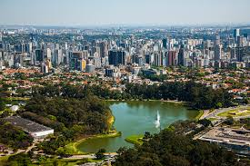

São Paulo, a maior cidade do Brasil e uma das maiores do mundo, tem uma história rica e multifacetada que remonta ao início do século XVI. A cidade foi fundada oficialmente em 25 de janeiro de 1554 pelos padres jesuítas Manuel da Nóbrega e José de Anchieta, que estabeleceram o Colégio de São Paulo de Piratininga no planalto paulista, uma região que então era habitada por povos indígenas tupiniquins.
Inicialmente, São Paulo era uma pequena vila isolada, voltada para a catequização dos indígenas e para atividades agrícolas. Durante os séculos XVII e XVIII, a cidade cresceu lentamente, mas ganhou importância estratégica por sua localização no interior, servindo como ponto de partida para as expedições dos bandeirantes — exploradores que desbravaram o interior do Brasil em busca de riquezas e escravos indígenas.
No século XIX, com a chegada da ferrovia e o desenvolvimento do café, São Paulo passou por um grande processo de urbanização e crescimento econômico. A cidade recebeu imigrantes europeus, principalmente italianos, portugueses, espanhóis e japoneses, que contribuíram para a formação de sua identidade multicultural.
Durante o século XX, São Paulo se transformou em um grande centro industrial, financeiro e cultural do Brasil. Hoje, a cidade é reconhecida por sua diversidade, sua intensa vida cultural, suas universidades e seu papel como motor econômico do país, abrigando mais de 12 milhões de habitantes na sua região metropolitana.
São Paulo é uma metrópole dinâmica, marcada pelo contraste entre áreas modernas e tradicionais, sendo um dos principais polos globais da América Latina.
Voltar a Página anterior